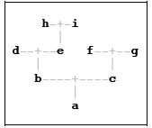

),
if she was found (if she wasn't found, it's an error).
),
if he was found (if he wasn't found, it's an error).
),
if she was found (if she wasn't found, it's an error).
),
if he was found (if he wasn't found, it's an error).
You are interested in finding the number of a person’s ancestors, that is, them, their parents, their parents' parents, etc. In their family, everyone has a unique name and couples are always recorded together -- if you find one parent, you've found the other. You are provided with three helper blocks (which access some global family tree):
),
if she was found (if she wasn't found, it's an error).
),
if he was found (if he wasn't found, it's an error).
Example family: In the diagram, mothers (b, d, f, h) are listed to the left of the fathers (c, e, g, i)

a's parents were found: b and c (b is the mother, c is the father).
b's parents were found: d and e.
c's parents were found: f and g.
e's parents were found: h and i.
d, f, g, h and i's parents were not found in the family tree.
Examples:
Fill in the blanks for the block that reports that person’s total number of ancestors (counting themselves). Examples:
Framework for this block is given in the "Ancestors" sprite in the starter file. You will not need to use HOFs for this problem.
It's a bit annoying that this block counts us as one of our ancestors. Write the block so that it returns the number of ancestors, not counting the original person (e.g. will report 8, instead of 9). It should only require subtle changes from the original block.